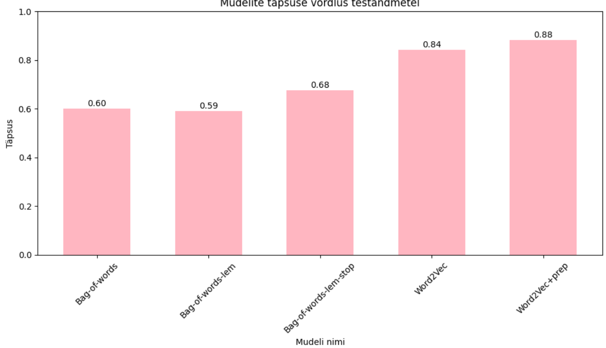
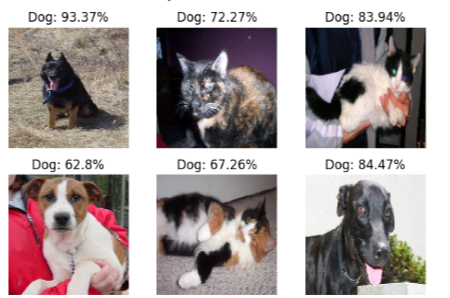
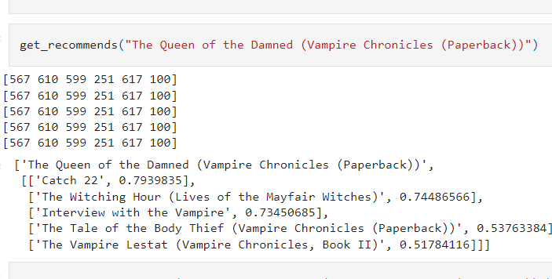
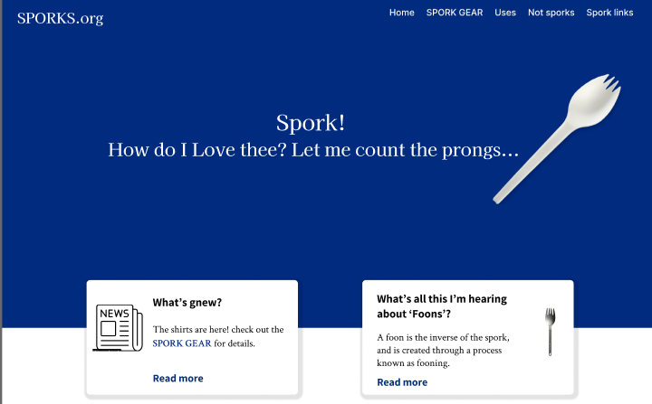
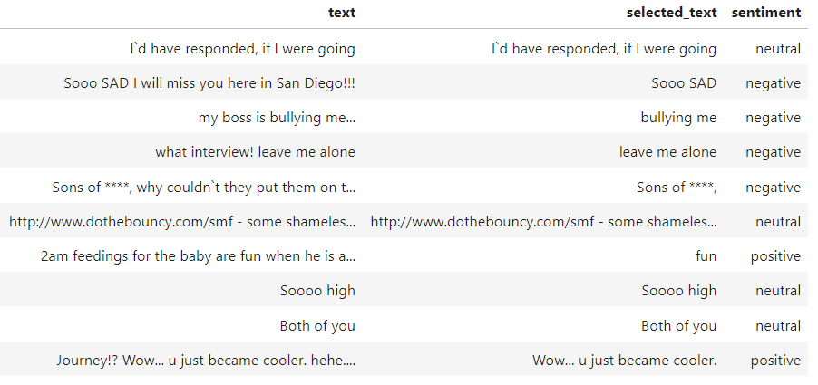

My Projects
Web
Emergency Alert App
The Wildlife Emergency Application is an upcoming web application that aims to provide a platform to cohesively coordinate the wildlife rescue efforts in Estonia.

Data
Text Classification of Estonian Articles
The models include Bag-of-words, Bag-of-words with lemmas, Bag-of-words with lemmas and stop-words, Word2Vec, and Word2Vec with preprocessing.
Data
Text Classification of Estonian Articles with Neural Networks
Utilizing LSTM in Keras and fine-tuning a BERT model.
Data
Text Classification of Cat and Dog pictures CNN
Using a deep learning model to classify images as either cats or dogs. It is based on the Keras library and trained on a dataset of cat and dog images.
Web
Emergency Alert App
The Wildlife Emergency Application is an upcoming web application that aims to provide a platform to cohesively coordinate the wildlife rescue efforts in Estonia.
Data
Book Recommendation
This project implements a book recommendation algorithm using the K-Nearest Neighbors (KNN) algorithm. The algorithm utilizes the Book-Crossings dataset, which contains 1.1 million ratings of 270,000 books by 90,000 users.
Web
Vue post app
Web
Web design
Web designs and prototypes usign Figma and Marvel.
Data
Tweet Sentiment Prediction
The task of this project is to create a model that predicts whether a tweet has a positive, neutral, or negative tone.
